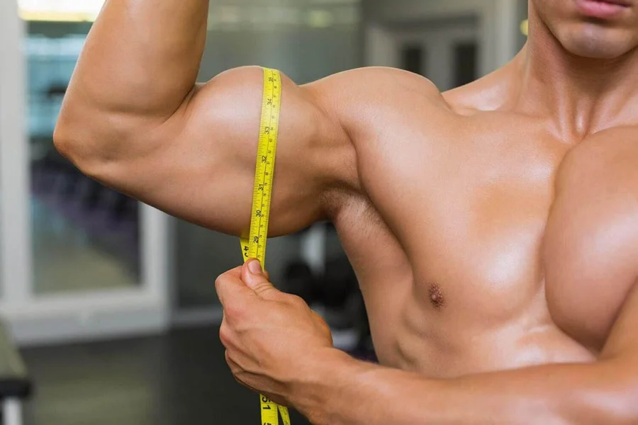

Формула МакКаллума расчитана на мужчин даёт нам представление об идеальных гармоничных пропорциях тела культуриста. Параметры, полученные по этой формуле, вполне реально достигнуть натурально и ваше тело будет выглядеть очень атлетично.

Между объемами мышц и весом тела есть определенные зависимости.
Так, при весе 85 кг Ваши руки будут составлять порядка 40 см. Однако вы никак не можете иметь руки по 50 см, это удел тех, чей вес порядка 110 кг.
Вместо того чтобы равняться на абсурдные ориентиры из глянцевых журналов, предлагаю вам формулы расчета реальных достижений, без употребления в процессе тренировок каких-либо «запрещенных препаратов». Эти формулы выведены на основании опыта натурального тренинга эктоморфов и учитывают естественные природные зависимости – между толщиной костей и мясом, которое можно на них нарастить. Результаты, полученные по этим формулам, доступны любому атлету без применения стероидов.
Только вот сравнивать их с достижениями чемпионов нет никакого смысла – у них свои реалии. Если вам удастся приблизиться к приведенным ниже показателям, вы будете резко выделяться на фоне остальных любителей – и силовыми результатами, и мышечными объемами.
Формулы Джона МакКаллума ориентированны на здоровых мужчин в возрасте от 18 до 35 лет.
Любой мужчина этого возраста с нормальным здоровьем, даже новичок в накачке, может рассчитывать на достижение данных объёмов по истечении нескольких лет правильных тренировок, а также соблюдении режимов питания, сна и отдыха.
Запястье надо измерять чуть выше косточки, выступающей на нем со стороны мизинца (шиловидного отростка локтевой кости), то есть ближе к локтю — так советует сам МакКаллум.
Вот формулы Джона МакКаллума, основанные на толщине запястья (именно запястья!!!):
Окружность Груди (ОГ)= 6.5 х обхват запястья
Окружность Таза = 85% от ОГ
Окружность Талии = 70% от ОГ
Окружность Бедра = 53% от ОГ
Окружность Шеи = 37% от ОГ
Окружность Бицепса = 36% от ОГ
Окружность Голени = 34% от ОГ
Окружность Предплечья = 29% от ОГ
Согласно формулам МакКаллума, среднестатистическое запястье эктоморфа в 17,5 см предполагает:
При росте 175 см такое развитие соответствует весу 85-90 кг.
При данных пропорциях ваше тело будет выглядеть крепким и атлетичным. Многие из вас обязательно смогут превысить эти показатели, но прежде чем думать о большем, нужно, по крайней мере, приблизиться к ним. А дальше вы уже сами будете знать, что делать и на что ориентироваться.
Данная формула представлена в разделе Расчеты → Идеальные пропорции приложения.